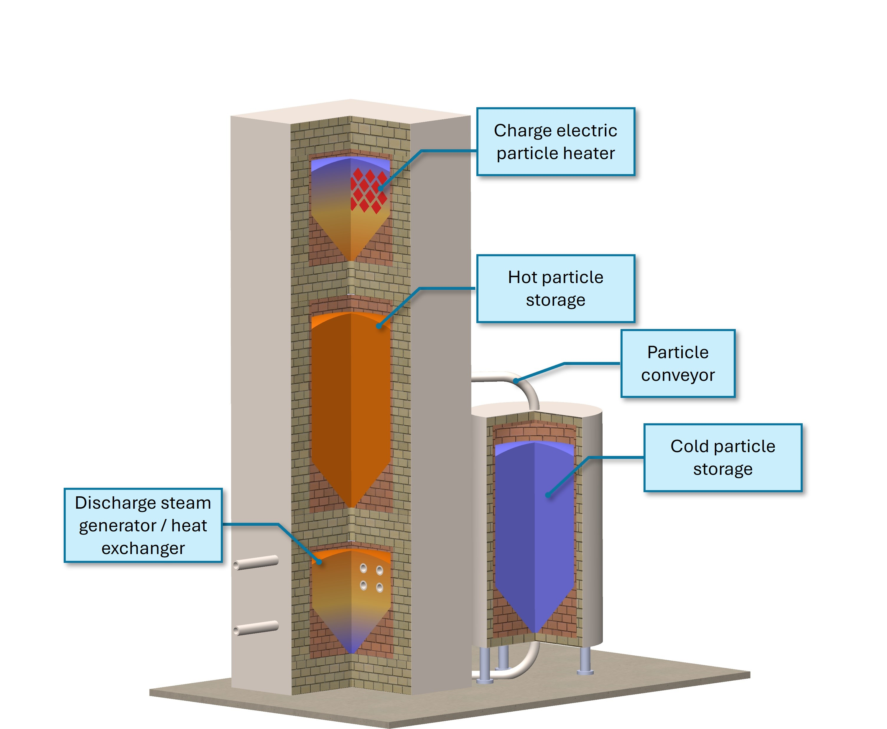

Integrated charger → hot particle storage → steam generator in a single vertical module; adjacent cold storage with enclosed particle conveyor.
What it is
A factory‑fabricated, modular thermal energy storage (TES) system that uses low‑cost silica sand as the storage medium. Each module integrates charging, hot storage, and a discharger (steam generator or hot‑air heat exchanger) inside a containerized enclosure for rapid, drop‑in deployment at industrial sites or campuses.
Why it matters
- Decarbonize process heat: Replace gas boilers for 60–500 °C steam/hot water using low‑cost, carbon‑free electricity.
- Low cost of heat: Preliminary LCOH estimate of $20–$35/MWhth using inexpensive sand and off‑peak power.
- High temperature & density: Sand stores sensible heat up to >1000 °C, enabling compact systems and high‑quality steam.
- Modular & scalable: 1–10 MW thermal/power building blocks with <100 MWh storage per module; add units to meet site demand.
- Factory‑built: Shorter project timelines, simpler siting (small footprint, vertical orientation), easier maintenance.
How it works
- Charge: Durable ceramic resistive elements heat circulating silica particles using low‑cost electricity.
- Store: Hot particles are held in an internally insulated steel containment (shipping‑container style).
- Discharge: Hot particles transfer heat directly to water/steam in a moving fluidized‑bed steam generator, or to air via a direct contact fluidized/moving‑bed exchanger.
- Recycle: Cooled particles are conveyed (enclosed tubular drag disc conveyor) back to the heater; cycle repeats.
Primary applications
- Industrial steam: sterilization, pasteurization, cooking, drying, distillation (≈80–500 °C).
- Combined heat and power (Rankine cycle) and district energy.
- Renewable firming and energy arbitrage for behind‑the‑meter users.
Business models
- Equipment sale or licensing to OEMs/boiler service providers.
- Heat‑as‑a‑Service with centralized remote monitoring and dispatch optimization.
- Pilot deployments with industrial hosts; multi‑site rollouts with standardized modules.
Innovation highlights
- All‑in‑one module: charger + hot storage + discharger in one vertical enclosure.
- Direct particle‑to‑steam/air heat transfer—no intermediate HTF; higher efficiency and smaller exchangers.
- Internally insulated steel shell avoids high‑alloy vessels and molten‑salt corrosion limits.
- Enclosed tubular drag conveyor minimizes particle wear and power use.
- Hierarchical controls (MTEIS) with forecasting, energy management, and remote O&M.
IP & team
Record of Invention: Modular Particle Thermal Energy Storage System for Distributed Energy Supply (Oct 24, 2024). Inventors: Z. Ma, S.Y. Jeong, J. Gifford, J. Hirschey, M. Shah, J. Martinek, U. Patel.
Contact
Name: Zhiwen Ma
Email: Zhiwen.Ma@nrel.gov
Affiliation: National Renewable Energy Laboratory (NREL), Golden, Colorado
Technical Specifications
System Ratings
| Parameter | Value | Notes |
|---|---|---|
| Module thermal capacity | Up to <100 MWhth | Expandable by adding modules |
| Thermal/Power rating | ~1–10 MW | Steam or hot‑air duty; CHP optional |
| Storage medium | Silica sand | Low cost, stable >1000 °C |
| Operating temp (hot) | up to >1000 °C | High sensible heat density |
| Steam supply | ≈60–500 °C | Preheater, evaporator, superheater sections |
| Estimated LCOH | $20–$35/MWhth | Preliminary estimate |
Charging
- Ceramic resistive heating elements in staggered stack; particles descend through narrow gaps to maximize contact and residence time.
- Electricity sources: grid, PV, wind, nuclear; compatible with energy‑arbitrage control.
Discharging Options
- Moving fluidized‑bed steam generator: Preheater → natural‑circulation evaporator → superheater; high heat‑transfer coefficients for compact boiler.
- Direct contact air/particle exchanger: Counterflow moving‑bed + bubbling region; target hot‑air for process heat.
Containment & Insulation
- Hermetically sealed, internally insulated steel shell within a rectangular container.
- Insulating firebrick/liners keep shell temperature low; no molten‑salt corrosion or narrow operating window.
Particle Handling
- Enclosed tubular drag chain/disc conveyor; low abrasion, low power, single loop serves charge/discharge states.
- Gravity‑assisted vertical arrangement: charger (top) → hot storage → discharger (bottom).
Controls & Data (MTEIS)
- Hierarchical control: component PLCs ⇄ SCADA ⇄ forecasting & dispatch optimization.
- Real‑time telemetry, historian logging, remote O&M, predictive maintenance, multi‑objective optimization (cost, demand, efficiency, life).
- Industrial Ethernet; standard plant protocols.
Footprint & Deployment
- Containerized, vertical orientation minimizes land area; simple foundation (piers + pad).
- Factory‑built modules for rapid installation, replacement, and scale‑out.
Materials Comparison (excerpt)
| Material | Temp Range (°C) | ΔT (K) | cp (kJ/kg·K) | Bulk Density (kg/m³) | Indicative $/kg |
|---|---|---|---|---|---|
| Silica sand | <0 → >1000 | ≈800 | ~1.1 | ~1560 | ~0.03 |
| Concrete | 200–400 | 200 | ~0.85 | ~2200 | ~0.5 |
| Magnesia firebrick | 200–1000 | 800 | ~0.88 | ~2950 | ~2 |
| Carbo HTM | 0–1000 | 800 | ~1.1 | ~2150 | ~1.5 |
| Solar salt | 290–560 | 270 | — | — | $10–$22 /kWhth |
Safety & Compliance
- Internally insulated steel containment; no flammable HTF; minimal pressure envelope (steam side only).
- Standard industrial safeguards with automated shutdown, emergency data write, and remote alarms.
Integration & Use Cases
- Retrofit to existing steam headers; compatible with existing BMS/SCADA.
- Pairs with on‑site PV/wind or grid for off‑peak charging; supports demand management and peak‑shaving.